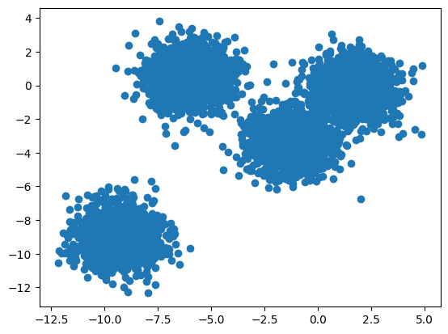
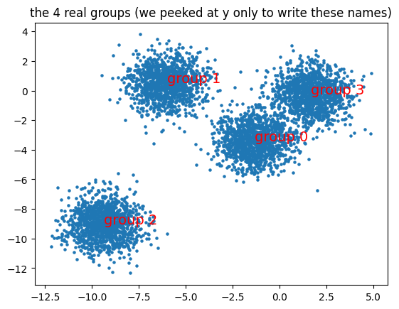
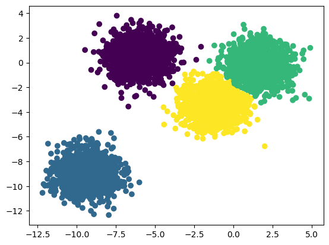
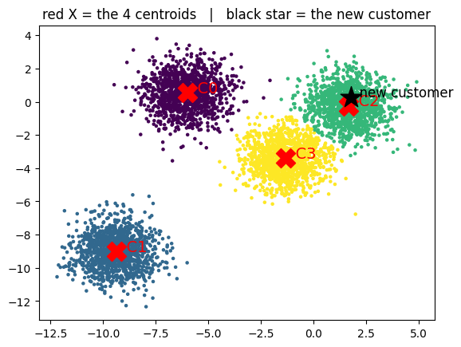
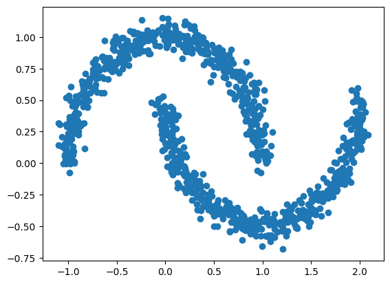
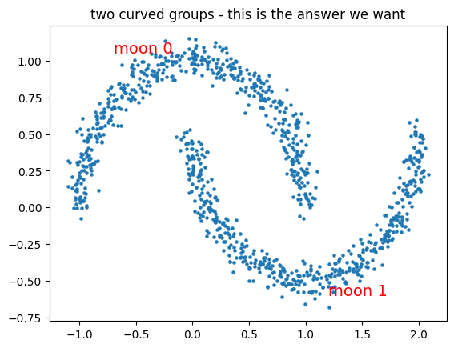
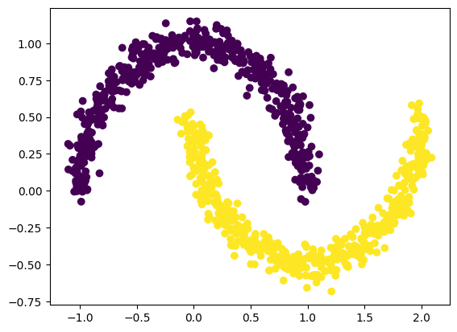
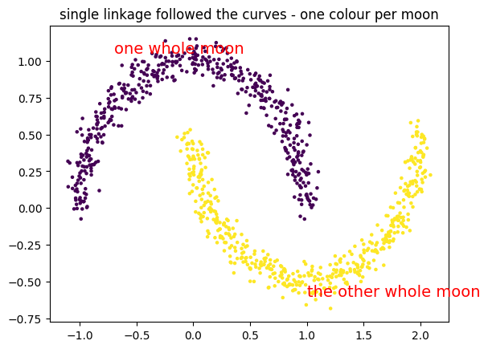

A shop had 5,000 customers and wanted to market to them in groups. Nobody had ever labelled a single customer.
Every model so far needed a right answer to learn from. Here there was none — no y column at all.
This is a different kind of problem: not "predict the label" but "is there any structure here at all?"
K-Means drops k markers, assigns each customer to the nearest, then moves each marker to the middle of its crowd, and repeats until nothing moves. The elbow method tells you what k should have been.
🔑 The one idea
Guess k centres, assign each point to the nearest, move the centres to the middle, repeat.
You work for a shop that has 5000 customers. For every customer the system stores two numbers.
Nobody ever wrote down what kind of customer each one is. That column does not exist, and
nobody is going to fill it in by hand for 5000 rows.
Your manager asks one question:
Note
"How many kinds of customers do we actually have, and who belongs to which kind?"
That question is clustering.
Why this is different from everything before
every earlier notebook
this notebook
the data
x and y
only x
the job
predict the answer someone gave you
find groups nobody wrote down
example
this house costs 45 lakh
these 1200 customers behave alike
K-Means in one line
Two things, repeated:
distance — every point joins the nearest centre
average — every centre moves to the middle of its own points
Repeat until nothing moves. That is the whole algorithm.
codecell 1
from sklearn.datasets import make_blobs,make_moons
import numpy as np
import pandas as pd
import matplotlib.pyplot as plt
1. The 5000 customers
make_blobs invents the data. It is not real shop data. It is practice data built to contain
clear groups, so we can check whether the model finds them.
n_samples=5000 — 5000 customers
n_features=2 — 2 numbers per customer, so everything fits on a flat graph
centers=4 — it secretly builds 4 groups
The invented numbers can be negative, so do not read them as rupees. Just read every dot as
one customer described by two measurements.
y holds the true group of each customer. In real work this column does not exist. We will
look at it exactly once, only to check ourselves, and never to train the model.
Before any model, just plot the customers and look.
codecell 5
plt.scatter(x[:,0],x[:,1])
Output
<matplotlib.collections.PathCollection at 0x11ea5f230>

Output from this notebook.
The same picture again, with the four real groups named on top of it.
This uses y, which is cheating. We do it once so you can see the answer the model is supposed
to reach on its own.
codecell 7
plt.scatter(x[:, 0], x[:, 1], s=5)
for group in range(4):
plt.text(x[y == group, 0].mean(), x[y == group, 1].mean(), f"group {group}",
fontsize=14, color="red")
plt.title("the 4 real groups (we peeked at y only to write these names)")
plt.show()

Output from this notebook.
Four clumps of customers.
One thing to expect: this picture changes every time you re-run the notebook.make_blobs
picks new positions each run because we did not fix a random seed. Sometimes two groups land
close enough to touch, sometimes all four sit far apart. The shapes stay round either way.
3. The algorithm you worked out by hand
KMeans does exactly the steps you did on paper:
pick K — how many groups you want
drop K centroids anywhere
distance — every customer joins the nearest centroid
average — every centroid moves to the middle of its own customers
repeat 3 and 4 until nobody changes group
A centroid is not a real customer. It is a marker sitting at the middle of a group, like a
teacher standing in the middle of their own students.
codecell 10
from sklearn.cluster import KMeans
Why n_clusters=4?
Because we built the data with 4 groups, so we know the answer.
In real work nobody tells you. Then you use the elbow method from your notes: run K-Means
for K = 1, 2, 3, 4, 5..., and each time measure the total distance of every point from its own
centroid. That total always falls as K grows, so the smallest value is a useless rule. You look
for the bend in the curve — the K after which extra groups stop helping.
codecell 12
kmeans = KMeans(n_clusters=4)
.fit() — what actually gets stored
.fit() runs the whole loop and then keeps one thing: the final position of the 4 centroids.
That is the entire trained model. Not 5000 rows — just 8 numbers. Remember this, because the
next section depends on it.
4. Your question: clustering only makes groups, so what does it predict?
Good question. The answer is that K-Means does two different jobs, and they are easy to mix
up.
Job 1 — grouping..fit() looks at all 5000 customers and decides who belongs with whom.
This is the job clustering is famous for.
Job 2 — predicting. A new customer walks in tomorrow, one the model has never seen.
.predict() measures that new customer against the 4 stored centroids and returns the number
of the nearest one.
So, what does clustering predict?
Note
It does not predict a value like price or salary.
It predicts which existing group a new row belongs to.
That is all. It cannot invent a fifth group, and it cannot tell you what a group means —
deciding that group 2 is "our loyal big spenders" is still a human job.
Why your line looks like it did nothing
You wrote kmeans.predict(x) on the same x the model was fitted on. So it simply handed
back the group of every customer it had already grouped. Nothing new could come out of it. The
next cell proves that.
codecell 18
predict = kmeans.predict(x)
Proof: on the same data, predict only repeats what fit already decided
labels_ is the grouping produced by .fit(). predict(x) measured those same 5000 customers
against the same 4 centroids, so of course it got the same result.
Now a customer the model has never seen
A new customer walks in tomorrow. They were not part of the 5000, and the model was never
trained on them.
To keep the story concrete: their two numbers are very close to customer 0's numbers. We take
customer 0's values and add 0.5 to both. So this is a different person who behaves like
customer 0.
Which group will the model put them in?
codecell 23
new_customer = [x[0] + 0.5] # never seen before, but behaves a lot like customer 0
print("customer 0 sits in group :", predict[0])
print("the new customer belongs to :", kmeans.predict(new_customer)[0])
Output
customer 0 sits in group : 2
the new customer belongs to : 2
Both lines print the same group number. A person who behaves like customer 0 lands in customer
0's group.
That is the whole prediction — one number, the id of the nearest centroid.
Why this matters in a real system: you fit once on your history, save those 8 numbers, and
then every new customer that arrives is one cheap distance check against 4 centroids. No
retraining, no scan of 5000 rows.
If you think of it as a service you would build: .fit() is the nightly batch job that
recomputes and caches 4 centroid rows. .predict() is the request-time lookup that compares one
incoming row against that tiny cached table and answers in microseconds.
5. The result, coloured
Each customer is now painted with their group number.
codecell 26
plt.scatter(x[:,0], x[:,1],c=predict)
Output
<matplotlib.collections.PathCollection at 0x12022df90>

Output from this notebook.
The same plot again, with the important things marked:
red X — the 4 centroids, the 8 numbers that are the model
black star — the new customer from the cell above
codecell 28
centers = kmeans.cluster_centers_
plt.scatter(x[:, 0], x[:, 1], c=predict, s=5)
plt.scatter(centers[:, 0], centers[:, 1], c="red", marker="X", s=300)
for i in range(4):
plt.text(centers[i, 0], centers[i, 1], f" C{i}", fontsize=14, color="red")
plt.scatter(new_customer[0][0], new_customer[0][1], c="black", marker="*", s=400)
plt.text(new_customer[0][0], new_customer[0][1], " new customer", fontsize=12)
plt.title("red X = the 4 centroids | black star = the new customer")
plt.show()

Output from this notebook.
Look at which coloured area the black star landed in. That colour is the number predict
returned. The model did not think about it any harder than that — nearest red X wins.
One more thing about the colours: the group numbers 0, 1, 2, 3 are only ids. Run the
notebook again and the same clump may come back as a different number. There is no correct
numbering, because nobody ever defined one.
6. Part two of the story — where K-Means gets it wrong
New data, new shape. make_moons builds two curved groups hooked into each other, like two
hands holding on.
Imagine two walking paths through a park that curve around each other. People on the same path
belong together, even though the path bends.
Note that x, y are reused here, so the customer data is gone from this point on.
codecell 31
x, y = make_moons(n_samples=1000, noise=0.06)
codecell 32
plt.scatter(x[:,0], x[:,1])
Output
<matplotlib.collections.PathCollection at 0x1205ec2d0>

Output from this notebook.
codecell 33
plt.scatter(x[:, 0], x[:, 1], s=5)
plt.text(-0.7, 1.05, "moon 0", fontsize=14, color="red")
plt.text(1.2, -0.6, "moon 1", fontsize=14, color="red")
plt.title("two curved groups - this is the answer we want")
plt.show()

Output from this notebook.
Two clear curved groups. Your eye separates them instantly.
This is the answer we want. Now watch K-Means try.
We ask for 2 groups, because there are clearly 2 shapes.
codecell 36
kmeans = KMeans(n_clusters=2)
codecell 37
kmeans.fit(x)
Output
KMeans(n_clusters=2)
codecell 38
predict = kmeans.predict(x)
codecell 39
plt.scatter(x[:,0], x[:,1],c=predict)
Output
<matplotlib.collections.PathCollection at 0x1206f91d0>
This is wrong, and it is worth understanding why it is wrong.
K-Means asks only one question: "which centre is nearer?" Look at where the two red X marks
sit — in empty space, in the hollow of the curves.
The far end of one moon is physically closer to the other moon's centre than to its own. So it
gets the other colour. K-Means was not confused; it answered its own question perfectly. But
that question cannot describe a curve.
The rule to remember: K-Means works on round, separated, similar-sized groups. Long or
curved shapes need a different method.
7. Hierarchical clustering — a different way to group
Opposite idea. No K at the start, no centroids at all.
The story
A party begins with everyone standing alone. Two friends spot each other and stand together. A
third person joins that pair. Elsewhere another small circle forms. Slowly the circles merge,
until the whole hall is one crowd.
Hierarchical clustering records that whole story of who joined whom, and lets you stop at any
point.
The steps
every point starts as its own cluster — 1000 points means 1000 clusters
find the two closest clusters and merge them
repeat until only one cluster is left
The record of those merges is the dendrogram in your notes. Its height shows how far apart
two things were when they merged: merged low means very similar, merged high means very
different. To get 2 groups, you cut across the tallest vertical line.
codecell 43
from sklearn.cluster import AgglomerativeClustering
linkage — the one setting that matters
A cluster is a group of points, not a single point. So "distance between two clusters" needs a
definition. That definition is linkage.
linkage
it measures the distance between
single
the closest pair of points, one from each cluster
complete
the farthest pair of points
average
the average of all pairs
ward (default)
how much the spread grows after merging
Your notes also list centroid linkage, which compares the two centre points. scipy has it;
sklearn offers ward in its place.
We use single here. It merges on the closest pair, which lets a cluster grow along a chain of
near neighbours — and a moon is exactly a chain of near neighbours.
n_clusters is not given, so it uses the default 2.
codecell 45
ag1 = AgglomerativeClustering(linkage='single')
codecell 46
ag1.fit(x)
Output
AgglomerativeClustering(linkage='single')
Back to your question — this model has nopredict()
AgglomerativeClustering gives you fit() and then labels_, and that is all.
Why: K-Means stored 4 centroids, so a new customer could be measured against them.
Hierarchical clustering stores no centres. It only holds the merge history of the exact
points you gave it. A new point has no place in that history, so there is nothing to measure it
against.
So the honest version of the earlier answer:
K-Means — groups your data and can place new rows into those groups.
Hierarchical — groups your data only. New rows mean running it again.
labels_ below is one number per customer, 0 or 1, in the same order as x.
<matplotlib.collections.PathCollection at 0x12081efd0>

Output from this notebook.
codecell 50
plt.scatter(x[:, 0], x[:, 1], c=ag1.labels_, s=5)
plt.text(-0.7, 1.05, "one whole moon", fontsize=14, color="red")
plt.text(1.0, -0.6, "the other whole moon", fontsize=14, color="red")
plt.title("single linkage followed the curves - one colour per moon")
plt.show()

Output from this notebook.
Two clean moons, one colour each. The same data K-Means cut in half.
Why it worked: inside a moon the points sit in a chain, each one very close to its
neighbour. single linkage merges on the closest pair, so the merging walks along the curve
from one end to the other. The gap between the two moons is wider than any gap inside a moon, so
the two moons never join.
8. Which one to use
K-Means
Agglomerative (hierarchical)
tell it K first?
yes
no, you cut the tree afterwards
shapes it can find
round groups only
any shape, depends on linkage
what it stores
the centroids
nothing, only the merge history
new rows
predict() works
not possible, run it again
speed on big data
fast
slow, it compares every pair
how you choose the number of groups
elbow plot
dendrogram
If you remember only one thing: clustering has no answer column, so it groups rows by
distance alone. K-Means measures distance to a centre, so it can only draw round groups, and
because it keeps those centres it can also place new rows. Hierarchical clustering measures
distance between points, so it can follow any shape, but it keeps nothing to reuse.
✍️ Handwritten notes
The pages written by hand while working through this topic — the version that came before the tidy write-up. Click any page to enlarge.